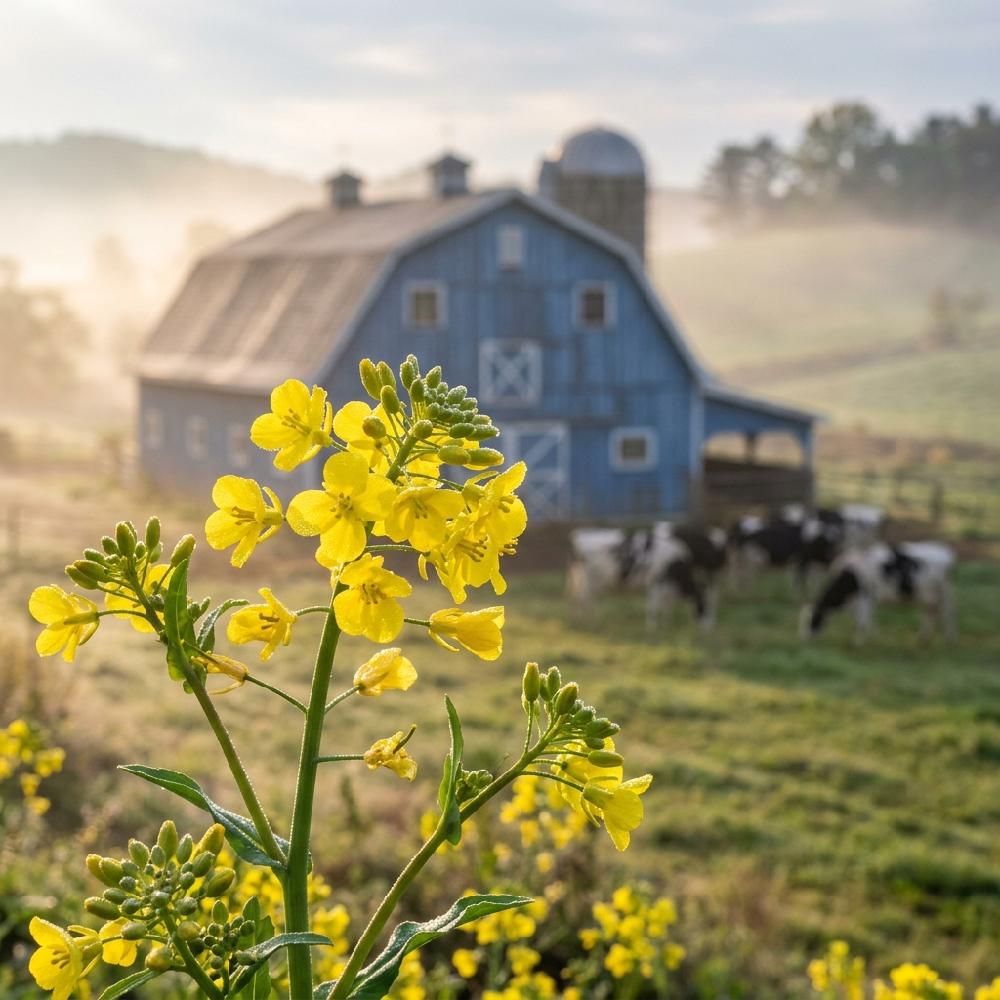

?�녕?�세?? 벚꽃??지�??�작?�면 ?�쉬?�??밀?�오�?마련?��?�? 경기???�성?�서???�제 �?진짜 봄의 축제가 ?�작?�었?�니?? 바로 ?�도�?최�? 규모�??�랑?�는 ?�성?�랜???�채�?& ?��?�?축제 ?�장?�니?? 굳이 비행기�? ?��??�주?�까지 가지 ?�아?? ?�없???�쳐�??��? ?�채꽃의 ?�연�?바람???�렁?�는 초록???��?�?�� ?�도�??�곳?�서 만끽?????�는 곳이�?
?�늘 ?��? 직접 ?�장??방문?�며 ?�아??기록?��? ?�순???�행 ?�보�??�어, ?�자 ?�러분이 ?�번 주말 ?�랑?�는 가�? ?�인�??�께 가???�벽??봄날???�이지�??�식?????�도�??�는 ?�무?�인 길잡?��? ??것입?�다. ?�넓?� 초원 ?�에 ?�쳐�??��??�과 초록?�의 ?��? 그리�?�??�이�??�유??걷는 ?�소???�복??지금�???밀???�게 ?�해?�리겠습?�다.
최근 기상 ?�이?��? 분석??�?결과, 4??중순까�? ??�??�식???�어 꽃의 ?��? ?�태??매우 ?�호??것으�?보입?�다. ?�만, 기온???�년보다 ?�폭 ?�아 개화 ?�도가 빨라�?만큼, 가??밀???��? ?��??�을 ?�고 ?�으?�다�??�번 �?주말(4/11~12)???�극 권장?�니?? 4??말로 갈수�?꽃이 지�??�앗??맺히�??�작?��?�? '?�생?????�하?�다�?지�??�장 ?�성?�로 ?�날 채비�??�시??것이 좋습?�다.
?�성?�랜?�는 부지가 매우 ?�어 주차 공간 ?�체??부족하지 ?�으?? ?�구까�? 진입?�는 ?�로가 ?�복 2차선??구간???�어 ?�체가 ?�할 ???�습?�다. 경�?고속?�로 ?�성 IC?�서 빠져?��? ?�랜?�로 ?�하??길목??붐빈?�면 ?�회 ?�로�?검?�해 보시??지?��? ?�요?�니?? ?�한, ?�협 카드???�성?��? ?�인??챙기?�는 것도 ?�뜰???�행???�작?�겠�?
| ?�토�??�치 | ?�징 �?매력 | 촬영 꿀??/th> |
|---|---|---|
| 바람???�덕 (?�차 근처) | ?�국?�인 ?�차�?배경?�로 ???�채�?�?/td> | ?�차�??�중?�이 ?�닌 측면??배치 |
| ?��?�??�책�??�구 | ?�없??초록 ?�도가 ?�쳐지??구간 | ??? ?��??�서 ?��???결을 강조 |
| 그림 같�? 초원 ?�무 ?�래 | ?�형?�인 '?�성?�랜?? ?�그?�처 ?�레??/td> | ?�무?� ?�물??거리감을 ?�어 ?�근�??�현 |
?�토존에??가??중요??것�? ?�감??조화?�니?? ?��? ?�채꽃밭?�서???�색?�나 미색???�피?? ?��? 밝�? ?�스???�의 ?�상??가???�보?�니?? 반�?�??�늘???�츠???�른 ?�늘�??�비되??�?��감을 줍니?? 최근 출시??갤럭??S26 ?�리즈의 '?�경 ?�진 최적?? 모드�??�용?�면 ?�채???��?빛을 ?�층 ???�명?�게 ?�아?????�으?? 채도�??�짝 ?�리???�보?�을 ?�해 ?�욱 ?�동�??�는 기록???�겨보세??
?�성?�랜?�는 ?�순??꽃만 보고 가??곳이 ?�닙?�다. '?�축???�마?�크'?�는 ?�름??걸맞�??�양??가축들??가까이??�????�는 ?�설????갖춰???�죠. ?�히 봄철?�는 �??�어???�끼 ?�들?�나 ?�아지?�을 만날 기회가 많아 ?�이?�에�??�아?�는 ?�태 교육???�이 ?�니?? ?�소 ?�물?�과 ?�촉??기회가 ?��? ?�심 ?�이?�에�??�곳??체험 ?�설?��? ?�서???�정???�물?�는 ?�별??공간????것입?�다.
?�랜???��??�는 ?��??? ?�동, �?�� ?�을 ?�는 ?�드 코트?� ?�크??존이 ??마련?�어 ?�습?�다. ?��?�??�성까�? ?�으???��?�???로컬 ?�식??맛보�??�으?�다�?차로 10�?거리??**?�성 ?�내??�?���?*?�나 ?�성 ?�산물인 '?�'�?지?� ?�정?�집??추천?�니?? ?�히 고소???��?가 ?�품???�성 ?�우�??�용??불고�??�식?� ?�행???�로�??�번???�려�?보양?�이 ??것입?�다.
초원 지??? ?�심보다 바람??강하�?그늘???�습?�다. ?�라??**?�외??차단??*??2?�간 간격?�로 ?�발??주어???�며, ?��? �?모자???�택???�닌 ?�수?�니?? ?�한, ?�넓?� 부지�?걸어???��?�?굽이 ?�는 ?�발보다??발이 ?�한 ?�동?��? 착용?�세?? 반려?�물�??�께 방문?�신?�면 '?�파?? ?�용 구역???�로 ?�영?�고 ?�으?? ?�반 꽃밭 진입 ???�용 ?�칙??반드???��???주시�?부?�드립니??

?�리 ?�에???�로 ?�무 ?�각 ?�이 ?�쳐�??�경???�선??맡길 ?�간???�요?�니?? ?�성?�랜?�는 �?기�?�??�버리지 ?�는 ?�각???�방감을 ?�공?�니?? ?��? ?�채�??�이�?걷고, 초록???��?�?�� ?�소리�? 직접 ?�는 것만?�로???�리??복잡???�상?��? ?�시 ?�을 ???�습?�다. ?�번 주말, ?�러분의 ?�중???�람?�과 ?�께 ?�성?�로 ?�나보세?? 그곳?�서 ?�어??꽃들�??�렁?�는 초록 ?�도가 지�??�러분의 마음???�뜻?�게 ?�아�?것입?�다.